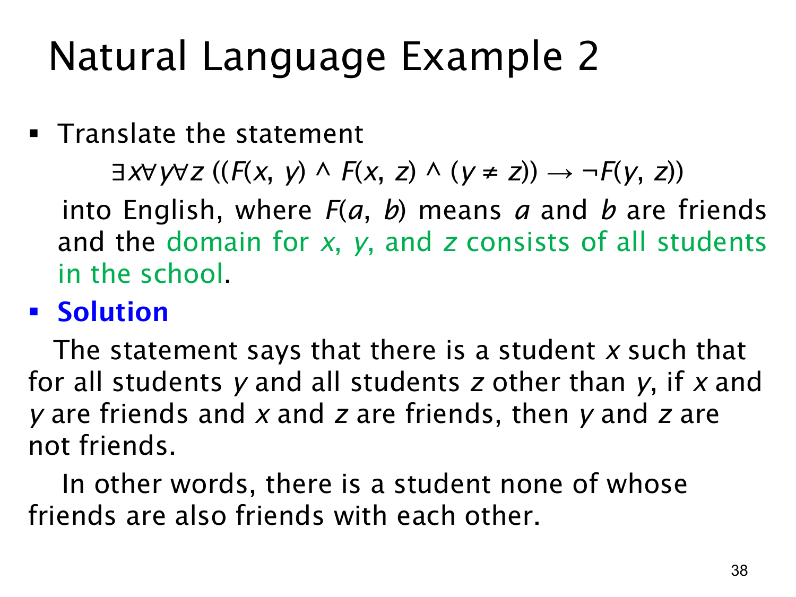

L1.2 · 第 38 页讲解原文
查看这一页课件

三层量词翻译：一个人的朋友彼此不相识
本页论域是学校里的所有学生，F(a,b) 表示“a 与 b 是朋友”。公式是
∃x∀y∀z((F(x,y)∧F(x,z)∧y=z)→¬F(y,z)).
按顺序读量词：先说存在一名学生 x；固定这名学生后，任取学生 y 和 z。若 y 是 x 的朋友，z 也是 x 的朋友，而且 y,z 不是同一个人，那么结论要求 y 与 z 不是朋友。
所以整句可简化为：学校里有一名学生，他或她的任何两位不同朋友都彼此不是朋友。 这描述的是以该学生为中心的一组朋友之间没有相互的友谊。x 与 y、x 与 z 是朋友，不推出 y 与 z 也是朋友；公式实际上要求后一关系为假。
蕴含的前件包含三项，必须同时成立才对 F(y,z) 作限制。如果 y 或 z 不是 x 的朋友，或者两者本来就是同一人，该条件句不会要求他们之间怎样。尤其是，如果某个学生没有朋友或只有一位朋友，便没有“两位不同朋友”可检验，他或她也会使这个全称条件成立；课件的自然语言简述应按这种空真含义理解，公式没有额外要求 x 至少有两位朋友。
这个例子展示了把长公式翻译为文字的顺序：先确定外层量词给出“谁”，再读内层的任意对象，最后把蕴含的前件和结论拼成“如果……那么……”。